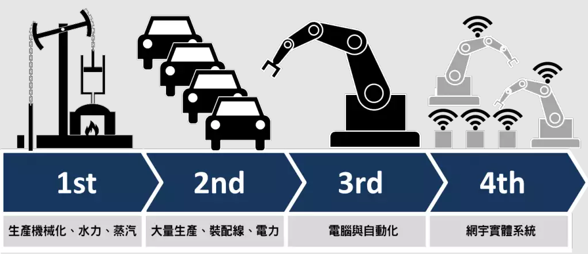

自政府于民國三十八年播遷來台，迄今已歷半世紀。這五十年來，我國經濟發展歷經1950年代的勞力密集輕工業進口替代時期，1960年代的出口擴張時期，1970年代的中間財工業進口替代時期及1980年代產業科技化導向時期階段， 工業部門已成為我國經濟發展的領導部門。而隨著工業化的加速推展，產業結構由勞力密集的輕工業，漸次轉型為資本密集的重化工業，以及技術密集的高科技產業，即使於兩次能源危機及東亞金融風暴期間，相對於東南亞各國遭受經濟衰退衝擊， 我國經濟仍保持成長，更顯示我國工業發展對穩定經濟的重要性。台灣工業過去五十年來的發展，正是政府採行循序漸進的務實產業政策策略，以及民間企業共同努力的結果。為檢討我國工業發展過程中各個不同時期所面臨的挑戰，與所採取之策略，進而認清我國工業發展成功的原因，並為未來的挑戰預作準備，實有必要將半世紀來台灣工業發展的歷程，留下歷史的見證。
工業改革
